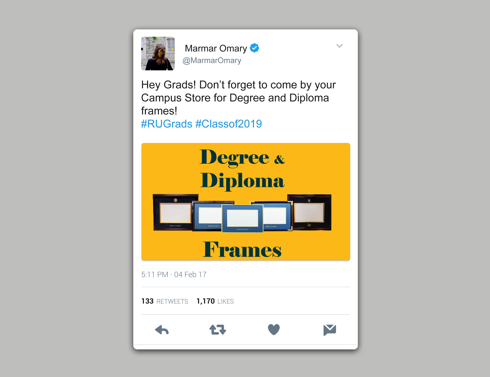
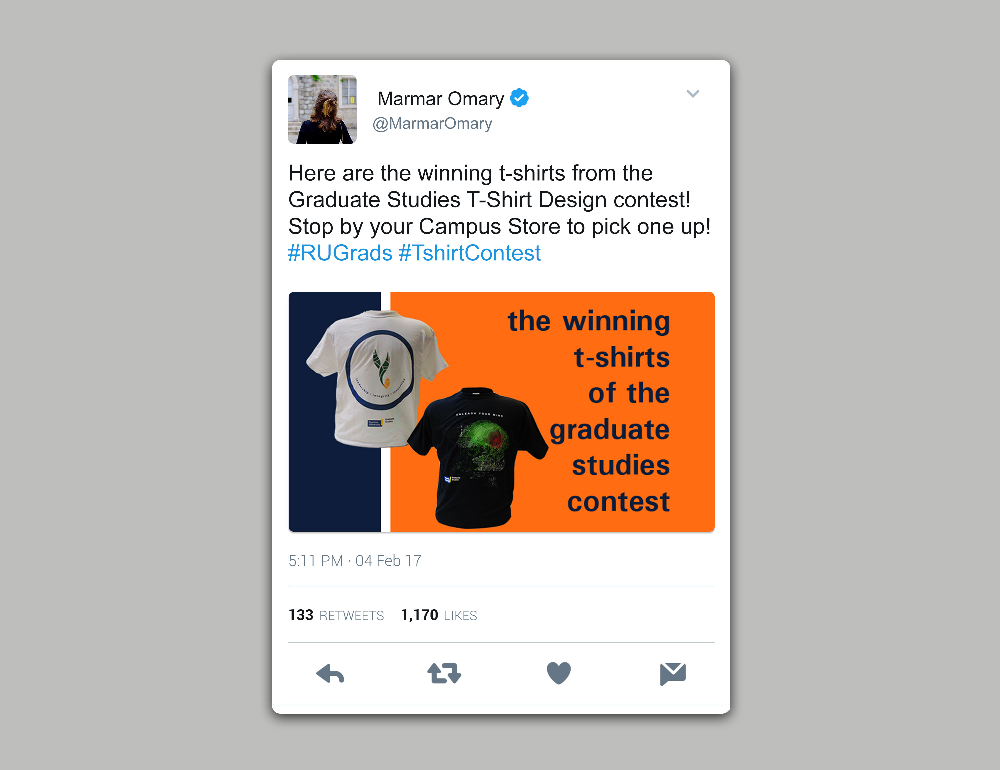
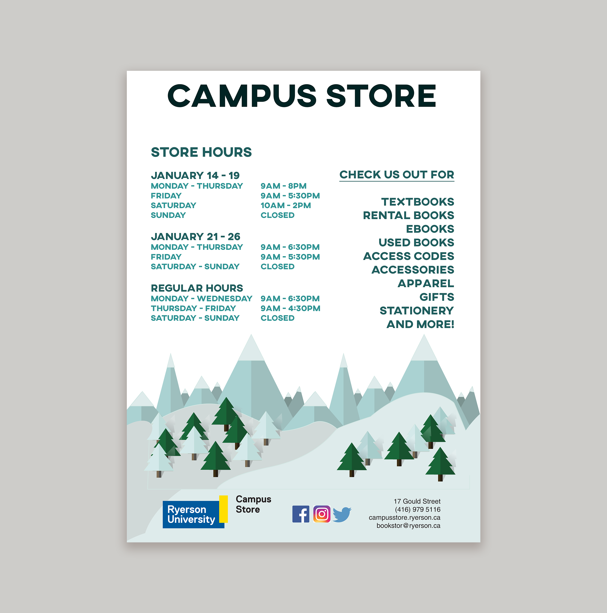
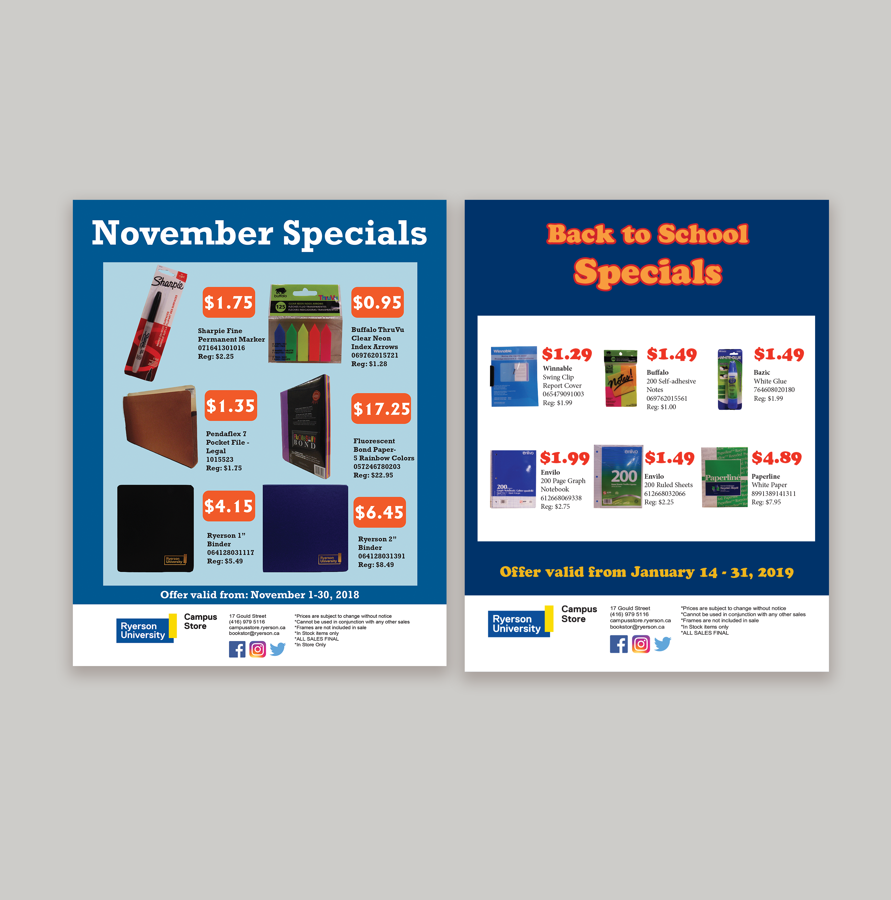

Request: 3 sales flyers with no images. Simple and easy to see from far. Needed ASAP
Each flyer took about 1-2 hours with a few changes. I used eye catching colours
and big and bold font to grab attention and for it to be easy to read. I added
different shapes and layouts to keep it interesting.


Request: 2 digital designs to be used for social media and website banner.
Items to be used in the design were provided.
I started with taking pictures of the frames and the shirts and edited them.
I decided to keep with a simple design since that was what previous projects
with the same client preferred. These designs were needed within 2 hours and
the client wanted efficiency, so I focused on everything being simple and straightforward.


Request: 2 sale flyers with part of the sale items provided, the rest to be chosen
by me. Sale prices provided. Mimic normal sale flyers with price
being the most highlighted. Along with the 2 flyers, a new store hours ad to be printed and published
in the TMU newspaper: The Eyeopener. Main focus was to be interesting but also focus the new hours.
All were assigned together with different deadlines.
I started with the November sale. I picked some items, got them approved and made a list of
the new sale prices. I photographed and edited them. I knew there was another sale in January
so I decided to make the flyers similar so customers recognized the near monthly sales but still
make each distinct so it was noticeable that it was a new flyer for a new sale. My process was the
same for both flyers. I decided on blue for all 3 projects to match the winter
season. I decided to have the important elements stand out by having them on a white or light background.
I used the complimentary colour to blue as the sale price colour to make them the focus. For the
store hours ad I decided to get a bit more creative to have the ad stand out against all other ads
in the newspaper so I decided on making a winter landscape illustration and having the white sky as the
backdrop for the information. Once done I proofed it and sent it off to the design and print department of
The Eyeopener. All other flyers and ads were printed and published digitally by myself.